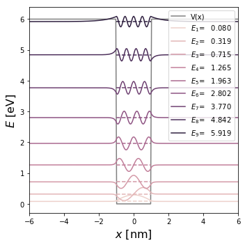

---
redirect_from:
  - "/cap2-particleinabox/cap2-rectangularwell"
interact_link: content/Cap2_ParticleinaBox/Cap2_RectangularWell.ipynb
kernel_name: python3
kernel_path: content/Cap2_ParticleinaBox
has_widgets: false
title: |-
  Solución numérica
pagenum: 7
prev_page:
  url: /Cap2_ParticleinaBox/Cap2_OneDimensionalBoxInteractive.html
next_page:
  url: /Cap2_ParticleinaBox/Cap2_TunnelingEffect.html
suffix: .ipynb
search: 

comment: "***PROGRAMMATICALLY GENERATED, DO NOT EDIT. SEE ORIGINAL FILES IN /content***"
---

    <main class="jupyter-page">
    <div id="page-info"><div id="page-title">Solución numérica</div>
</div>
    <div class="jb_cell">

<div class="cell border-box-sizing code_cell rendered">
<div class="input">

<div class="inner_cell">
    <div class="input_area">
<div class=" highlight hl-ipython3"><pre><span></span><span class="o">%</span><span class="k">pylab</span> inline
<span class="kn">import</span> <span class="nn">seaborn</span> <span class="k">as</span> <span class="nn">sns</span>
</pre></div>

    </div>
</div>
</div>

<div class="output_wrapper">
<div class="output">

<div class="jb_output_wrapper }}">
<div class="output_area">

<div class="output_subarea output_stream output_stdout output_text">
<pre>Populating the interactive namespace from numpy and matplotlib
</pre>
</div>
</div>
</div>
</div>
</div>

</div>
</div>

<div class="jb_cell">

<div class="cell border-box-sizing code_cell rendered">
<div class="input">

<div class="inner_cell">
    <div class="input_area">
<div class=" highlight hl-ipython3"><pre><span></span><span class="n">e</span>          <span class="o">=</span> <span class="mf">1.602e-19</span>              <span class="c1"># 1 eV = 1.602e-19 J</span>
<span class="n">ħ</span>          <span class="o">=</span> <span class="mf">0.6582119514</span>           <span class="c1"># [eV fs]</span>
<span class="n">c</span>          <span class="o">=</span> <span class="mi">299792458</span>              <span class="c1"># [m/s]</span>
<span class="n">massfactor</span> <span class="o">=</span> <span class="n">e</span><span class="o">/</span><span class="n">c</span><span class="o">/</span><span class="n">c</span>                  <span class="c1"># 1 eV/c^2 = 1.79e-36 kg</span>
<span class="n">me</span>         <span class="o">=</span> <span class="mf">9.109e-31</span><span class="o">/</span><span class="n">massfactor</span>   <span class="c1"># [eV/c^2] = 0.5x10^6 eV/c^2   </span>
<span class="n">c_nmfs</span>     <span class="o">=</span> <span class="mf">299.792458</span>             <span class="c1"># [nm/fs]</span>
<span class="n">Eλ</span>         <span class="o">=</span> <span class="n">ħ</span><span class="o">*</span><span class="n">ħ</span><span class="o">*</span><span class="n">c_nmfs</span><span class="o">*</span><span class="n">c_nmfs</span><span class="o">/</span><span class="mi">2</span><span class="o">/</span><span class="n">me</span> <span class="c1"># eV nm^2</span>

<span class="c1"># Number of points in the mesh</span>
<span class="n">N</span>    <span class="o">=</span> <span class="mi">2</span><span class="o">**</span><span class="mi">12</span><span class="o">+</span><span class="mi">1</span>
<span class="n">xinf</span> <span class="o">=</span> <span class="mf">100.0</span>             <span class="c1"># nm</span>
<span class="n">ℓ</span>    <span class="o">=</span> <span class="mf">1.0</span>               <span class="c1"># nm</span>

<span class="n">x</span>    <span class="o">=</span> <span class="n">linspace</span><span class="p">(</span><span class="o">-</span><span class="n">xinf</span><span class="p">,</span><span class="n">xinf</span><span class="p">,</span><span class="n">N</span><span class="p">)</span>
<span class="n">Δx</span>   <span class="o">=</span> <span class="n">x</span><span class="p">[</span><span class="mi">1</span><span class="p">]</span><span class="o">-</span><span class="n">x</span><span class="p">[</span><span class="mi">0</span><span class="p">]</span>

<span class="n">V0</span>   <span class="o">=</span> <span class="mf">6.0</span>              <span class="c1"># eV</span>

<span class="n">V</span>        <span class="o">=</span> <span class="n">zeros</span><span class="p">(</span><span class="n">N</span><span class="p">)</span>
<span class="n">index</span>    <span class="o">=</span> <span class="n">logical_or</span><span class="p">(</span> <span class="n">x</span><span class="o">&lt;-</span><span class="n">ℓ</span><span class="p">,</span> <span class="n">x</span><span class="o">&gt;</span><span class="n">ℓ</span><span class="p">)</span>
<span class="n">V</span><span class="p">[</span><span class="n">index</span><span class="p">]</span> <span class="o">=</span> <span class="n">V0</span>

<span class="n">Mdd</span>      <span class="o">=</span> <span class="mf">1.</span><span class="o">/</span><span class="p">(</span><span class="n">Δx</span><span class="o">*</span><span class="n">Δx</span><span class="p">)</span><span class="o">*</span><span class="p">(</span> <span class="n">diag</span><span class="p">(</span><span class="n">ones</span><span class="p">(</span><span class="n">N</span><span class="o">-</span><span class="mi">1</span><span class="p">),</span><span class="o">-</span><span class="mi">1</span><span class="p">)</span> <span class="o">-</span><span class="mi">2</span><span class="o">*</span><span class="n">diag</span><span class="p">(</span><span class="n">ones</span><span class="p">(</span><span class="n">N</span><span class="p">),</span><span class="mi">0</span><span class="p">)</span> <span class="o">+</span> <span class="n">diag</span><span class="p">(</span><span class="n">ones</span><span class="p">(</span><span class="n">N</span><span class="o">-</span><span class="mi">1</span><span class="p">),</span><span class="mi">1</span><span class="p">))</span>
<span class="n">H</span>        <span class="o">=</span> <span class="o">-</span><span class="n">Eλ</span><span class="o">*</span><span class="n">Mdd</span> <span class="o">+</span> <span class="n">diag</span><span class="p">(</span><span class="n">V</span><span class="p">)</span>
<span class="n">E</span><span class="p">,</span><span class="n">ψT</span>     <span class="o">=</span> <span class="n">eigh</span><span class="p">(</span><span class="n">H</span><span class="p">)</span>
<span class="n">ψ</span>        <span class="o">=</span> <span class="n">transpose</span><span class="p">(</span><span class="n">ψT</span><span class="p">)</span>
</pre></div>

    </div>
</div>
</div>

</div>
</div>

<div class="jb_cell">

<div class="cell border-box-sizing code_cell rendered">
<div class="input">

<div class="inner_cell">
    <div class="input_area">
<div class=" highlight hl-ipython3"><pre><span></span><span class="n">fig</span><span class="p">,</span><span class="n">axes</span> <span class="o">=</span> <span class="n">plt</span><span class="o">.</span><span class="n">subplots</span><span class="p">(</span><span class="n">ncols</span><span class="o">=</span><span class="mi">1</span><span class="p">,</span><span class="n">nrows</span><span class="o">=</span><span class="mi">1</span><span class="p">,</span><span class="n">figsize</span><span class="o">=</span><span class="p">(</span><span class="mi">5</span><span class="p">,</span><span class="mi">5</span><span class="p">))</span>

<span class="n">axes</span><span class="o">.</span><span class="n">set_xlim</span><span class="p">(</span><span class="o">-</span><span class="mi">6</span><span class="o">*</span><span class="n">ℓ</span><span class="p">,</span><span class="mi">6</span><span class="o">*</span><span class="n">ℓ</span><span class="p">)</span>

<span class="n">axes</span><span class="o">.</span><span class="n">plot</span><span class="p">(</span><span class="n">x</span><span class="p">,</span><span class="n">V</span><span class="p">,</span><span class="n">c</span><span class="o">=</span><span class="s2">&quot;Gray&quot;</span><span class="p">,</span><span class="n">label</span><span class="o">=</span><span class="s2">&quot;V(x)&quot;</span><span class="p">)</span>


<span class="n">index</span> <span class="o">=</span> <span class="n">E</span><span class="o">&lt;</span><span class="n">V0</span>
<span class="n">itera</span> <span class="o">=</span> <span class="p">[</span><span class="n">i</span> <span class="k">for</span> <span class="n">i</span><span class="p">,</span> <span class="n">x</span> <span class="ow">in</span> <span class="nb">enumerate</span><span class="p">(</span><span class="n">index</span><span class="p">)</span> <span class="k">if</span> <span class="n">x</span><span class="p">]</span>

<span class="n">num_shades</span> <span class="o">=</span> <span class="nb">len</span><span class="p">(</span><span class="n">itera</span><span class="p">)</span>
<span class="n">color_list</span> <span class="o">=</span> <span class="n">sns</span><span class="o">.</span><span class="n">cubehelix_palette</span><span class="p">(</span><span class="n">num_shades</span><span class="p">)</span>

<span class="k">for</span> <span class="n">i</span> <span class="ow">in</span> <span class="n">itera</span><span class="p">:</span>
    <span class="n">axes</span><span class="o">.</span><span class="n">plot</span><span class="p">(</span><span class="n">x</span><span class="p">,</span><span class="n">E</span><span class="p">[</span><span class="n">i</span><span class="p">]</span><span class="o">+</span><span class="n">ψ</span><span class="p">[</span><span class="n">i</span><span class="p">],</span><span class="n">label</span><span class="o">=</span><span class="sa">r</span><span class="s2">&quot;$E_</span><span class="si">{0}</span><span class="s2">$=</span><span class="si">{1:&gt;8.3f}</span><span class="s2">&quot;</span><span class="o">.</span><span class="n">format</span><span class="p">(</span><span class="n">i</span><span class="o">+</span><span class="mi">1</span><span class="p">,</span><span class="n">E</span><span class="p">[</span><span class="n">i</span><span class="p">]),</span><span class="n">c</span><span class="o">=</span><span class="n">color_list</span><span class="p">[</span><span class="n">i</span><span class="p">])</span>

<span class="k">for</span> <span class="n">i</span> <span class="ow">in</span> <span class="n">itera</span><span class="p">:</span>
    <span class="n">axes</span><span class="o">.</span><span class="n">plot</span><span class="p">([</span><span class="o">-</span><span class="n">ℓ</span><span class="p">,</span><span class="n">ℓ</span><span class="p">],[</span><span class="n">E</span><span class="p">[</span><span class="n">i</span><span class="p">],</span><span class="n">E</span><span class="p">[</span><span class="n">i</span><span class="p">]],</span><span class="s1">&#39;--&#39;</span><span class="p">,</span><span class="n">c</span><span class="o">=</span><span class="n">color_list</span><span class="p">[</span><span class="n">i</span><span class="p">])</span>

<span class="n">axes</span><span class="o">.</span><span class="n">set_xlabel</span><span class="p">(</span><span class="s2">&quot;$x$ [nm]&quot;</span><span class="p">,</span><span class="n">fontsize</span><span class="o">=</span><span class="mi">16</span><span class="p">)</span>
<span class="n">axes</span><span class="o">.</span><span class="n">set_ylabel</span><span class="p">(</span><span class="s2">&quot;$E$ [eV]&quot;</span><span class="p">,</span><span class="n">fontsize</span><span class="o">=</span><span class="mi">16</span><span class="p">)</span>
<span class="n">axes</span><span class="o">.</span><span class="n">legend</span><span class="p">(</span><span class="n">loc</span><span class="o">=</span><span class="mi">1</span><span class="p">)</span>
<span class="n">fig</span><span class="o">.</span><span class="n">tight_layout</span><span class="p">()</span>
<span class="c1"># fig.savefig(&quot;Cap2_RectangularWell.pdf&quot;)</span>
</pre></div>

    </div>
</div>
</div>

<div class="output_wrapper">
<div class="output">

<div class="jb_output_wrapper }}">
<div class="output_area">


<div class="output_png output_subarea ">

</div>

</div>
</div>
</div>
</div>

</div>
</div>

 


    </main>
    